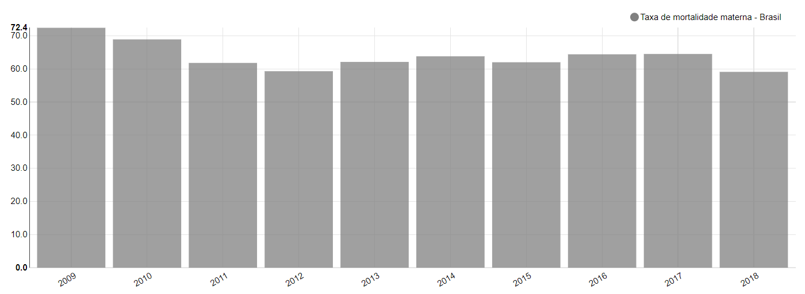
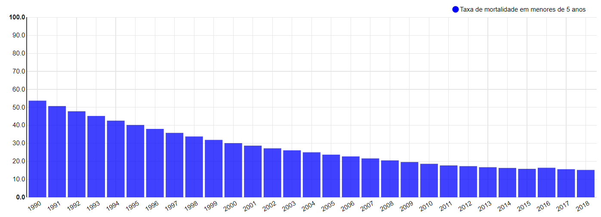
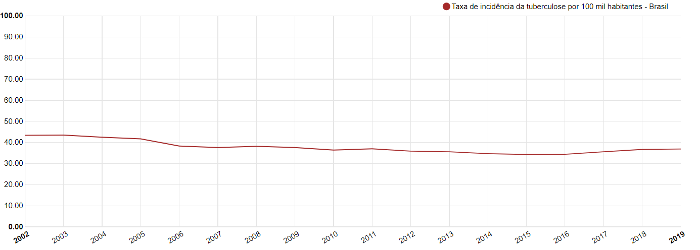

-
3.1 Até 2030, reduzir a taxa de mortalidade materna global para menos de 70 mortes por 100.000 nascidos vivos
 -
3.2 Até 2030, acabar com as mortes evitáveis de recém-nascidos e crianças menores de 5 anos, com todos os países objetivando reduzir a mortalidade neonatal para pelo menos 12 por 1.000 nascidos vivos e a mortalidade de crianças menores de 5 anos para pelo menos 25 por 1.000 nascidos vivos
 -
3.3 Até 2030, acabar com as epidemias de AIDS, tuberculose, malária e doenças tropicais negligenciadas, e combater a hepatite, doenças transmitidas pela água, e outras doenças transmissíveis
